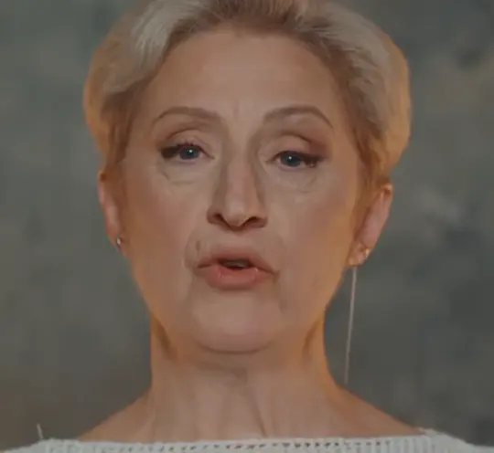
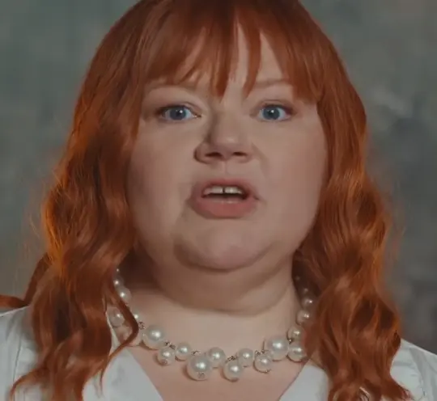
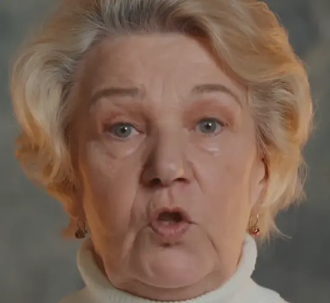
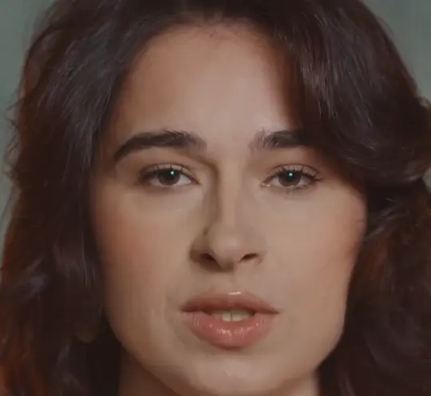

что, если бы песня
была сайтом?
Новая песня Анны Немченко. Каждую строчку поёт своя героиня.
что, если бы песня
была сайтом?
Новая песня Анны Немченко. Каждую строчку поёт своя героиня.
что, если бы песня
была сайтом?
«Молви» Анны Немченко. Каждую строчку поёт своя героиня, а в конце все собираются вместе.
Фан-концепт. Звук и кадры из клипа Анны Немченко
Листай: строчки будут петь по очереди
Допиши свою строчку и нажми «В хор»: она встанет рядом с голосами из песни.
Строчка видна только тебе: сайт её никуда не отправляет

о важном
о женском
душой
сердцемПесня и клип: Анна Немченко, «Молви». Фан-концепт, звук и кадры из клипа. Дизайн: Алина Кругликова